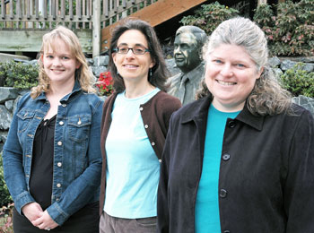

General Article
|

From left, Jennifer Yahne, of the HIV Vaccine Trials Network, Dr. Barbara Berg, of the External Affairs and Communications Department, and Dr. Karen Peterson, of the Human Biology Division, will use their grants to stretch and advance their career paths. Yahne and Berg will apply their funds toward graduate degrees in administration; Peterson will attend a leadership-training program in San Diego.
Photo by Dean Forbes |
Winning a grant from the Peggy Means Leadership Development Fund will help Dr. Barbara Berg pay tuition to enter the technology management MBA program at the University of Washington. Yet being one of the fund's first recipients means more to Berg than just dollars and cents.
"It's very gratifying to work at a place where they're willing to invest in you," said Berg, strategic communications adviser with the External Affairs and Communications and Development departments.
Peggy Means, the Center's former chief operating officer and senior vice president for strategic development, was a mentor to numerous Center employees as they pursued their career goals. After Means retired last year, colleagues established the fund to honor her legacy of leadership development.
Joining Berg as winners of the first Means fund grants are Jennifer Yahne, contracting projects manager with the HIV Vaccine Trials Network (HVTN), and Dr. Karen Peterson, associate for interdisciplinary training.
"All three submitted applications reflecting an excellent use of the funds in the spirit of Peggy Means, who mentored many and provided opportunities for people to stretch and advance their career paths," said Janet Leeds, administrator for the Fred Hutchinson/University of Washington Cancer Consortium.
Leeds served on the committee that selected the winning applicants. Han Nachtrieb, vice president for Human Resources, and Dr. Beverly Torok-Storb, an investigator in the Clinical Research Division, also participated in the selection process.
All employees — scientific as well as nonscientific — are eligible to apply for one of the annual grants provided they have worked at the Center for at least four years and plan to use the grant to enhance their leadership skills. The committee will begin accepting applications for the next round of grants in January 2007.
Graduate administrative degreesBerg joined the Center nine years ago as a program manager with the Science Education Partnership, eventually becoming associate director. She then became a science writer with External Affairs and Communications before assuming her current position, which she proposed creating to reflect her initial role as a science writer and her emerging role as a consultant for both the External Affairs and Development departments.
"The thing that's great about working here is that I've been given the opportunity to apply my skills to a wide range of activities," Berg said. With the expansion of her role, Berg feels the need to acquire deeper understanding of strategic planning, finance and marketing — all of which the technology management MBA program covers.
"I feel very committed to this institution, and that's why I'm excited about gaining new skills that will allow me to contribute to an even broader array of projects in the future," said Berg, who will continue to work while pursuing her MBA beginning in January.
Yahne is making similar use of her Means fund grant to help her obtain a master's degree in health administration from UW. Enrolled in the program since 2004, Yahne will use the grant to pay for her final two quarters of study. "It's an expensive program, and to get the extra help from the Center is very encouraging," Yahne said.
Yahne has worked at the Center for nearly six years, starting as a program assistant with the HVTN. In her present role as contracting projects manager, she leads a team of two contract specialists and oversees some 70 research agreements involving institutions throughout the United States and the world.
"I enjoy doing things where I'm constantly challenged," said Yahne, whose goal in pursuing the graduate degree is preparation for the growing demands of managing research projects. Already, she has been able to apply what she's learned through her master's program to her job, developing a new budget model for use by the network's 27 vaccine-trials units.
"As the dollar amounts have grown larger and the organizational structures of the institutions have become more complex, there is a great need for people with training in management skills and people skills to get everyone moving in the right direction," Yahne said.
Leadership training for PetersonPeterson's goal is to prepare herself for whatever opportunities might arise next. Her grant will enable her to attend a five-day leadership-development program at the Center for Creative Leadership in San Diego. "I'm very dedicated to the Center and wish to continue my career here," she said. "The CCL program came highly recommended and the training will be broadly useful to me no matter what my next steps are."
During her nine years at the Center, Peterson has worked to stimulate interdisciplinary collaboration among Center scientists and help them better communicate their work to lay audiences. In addition, she serves as adviser to the Student-Postdoc Advisory Committee.
Even if she had not won a grant, Peterson still would have benefited from the creation of the leadership fund. "It was the Means fund that jump-started me to begin thinking about where I was going and what I wanted to do next with my career," she said. "Peggy Means is an amazing individual, and I'm so glad this fund was organized."